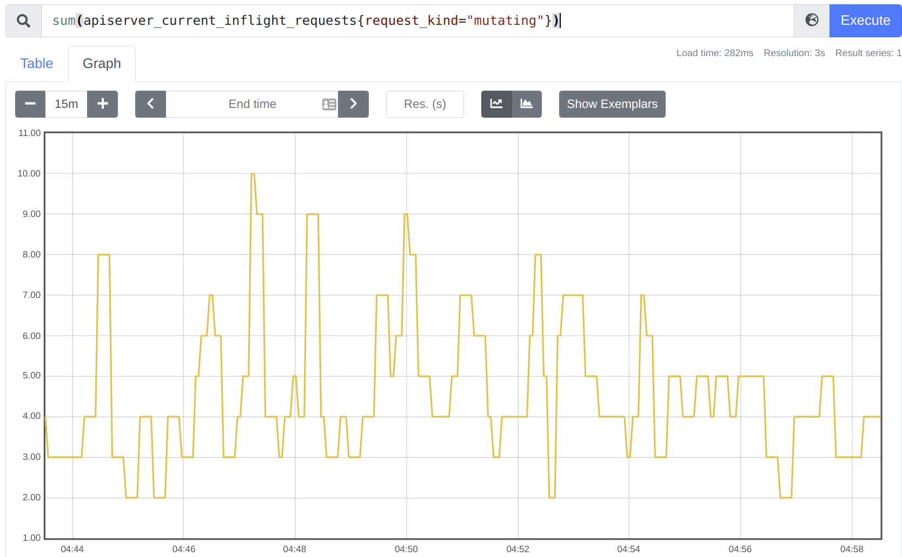
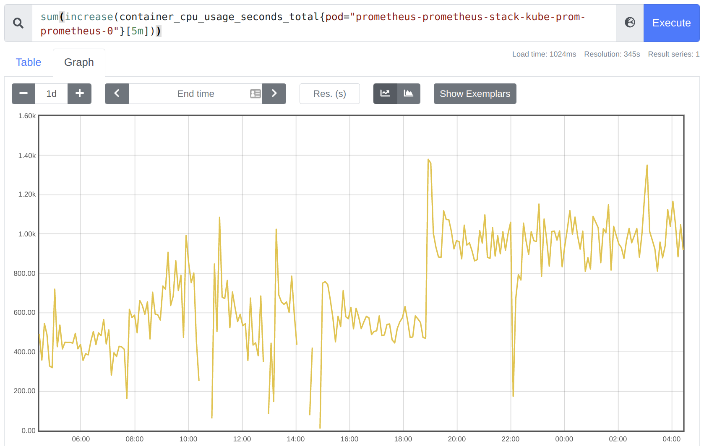
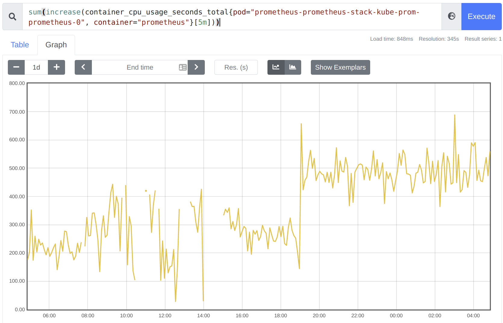
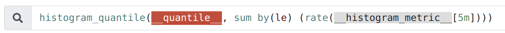
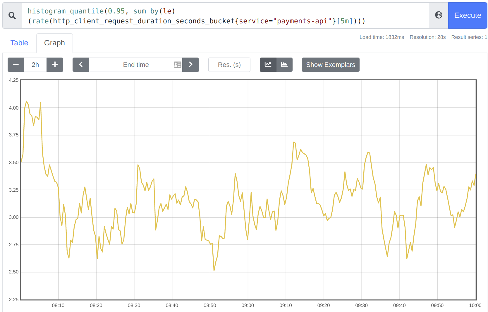
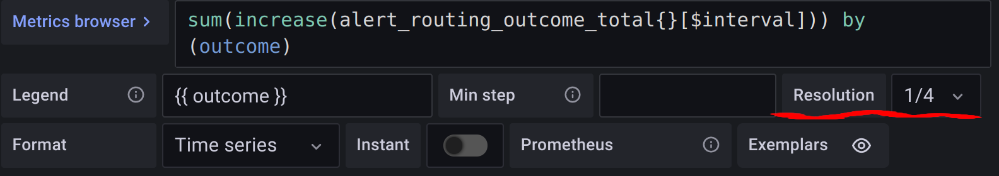
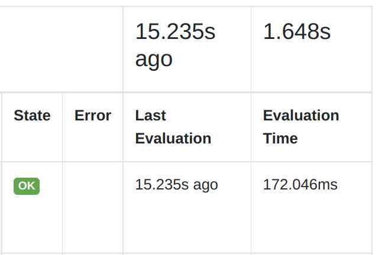
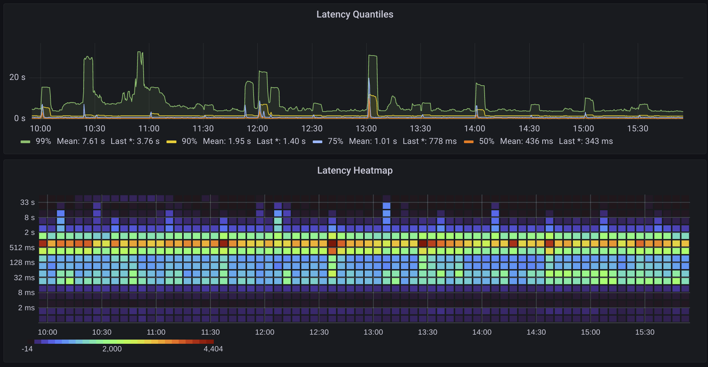
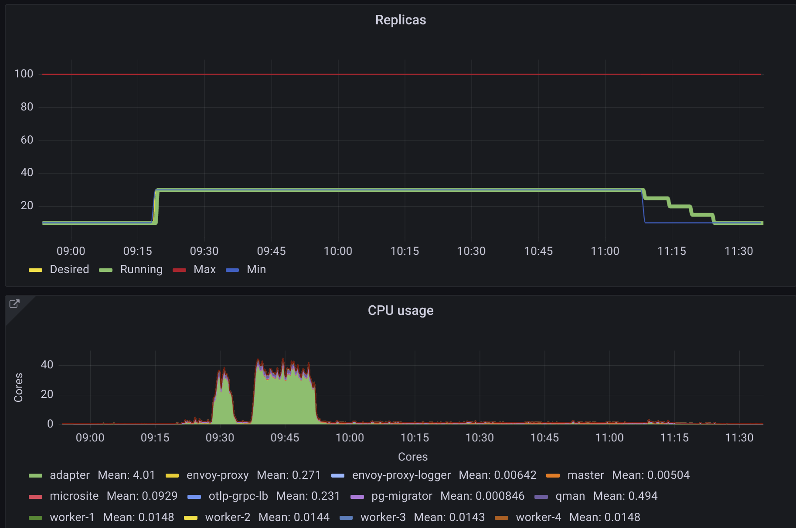

Metrics Training
Agenda
- metrics overview & types
- metric questions & querying
- qa + break
- optimization
- visualisation
- fix a dashboard demo
What are metrics
- collections of data points
- data points exposed by an app
- exposed on /metrics as text
- fetched by prometheus
- prometheus /15s :: GET /metrics
Scraping / ServiceMonitors
Guru: How to get your metrics into Prometheus
Don’t use metricsScraping labels
What metrics looks like
# TYPE http_requests_in_flight gauge
http_requests_in_flight 13
# TYPE http_request_seconds summary
http_request_seconds_sum{method="GET"} 9036.32
http_request_seconds_count{method="GET"} 807283.0
http_request_seconds_created{method="GET"} 1605281325.0
http_request_seconds_sum{method="POST"} 479.3
http_request_seconds_count{method="POST"} 34.0
http_request_seconds_created{method="POST"} 1605281325.0
# TYPE process_cpu_seconds counter
# UNIT process_cpu_seconds seconds
process_cpu_seconds_total 4.20072246e+06
Metric terminology
# TYPE http_requests_in_flight gauge
http_requests_in_flight 13
# TYPE http_request_seconds summary
http_request_seconds_sum{method="GET"} 9036.32
http_request_seconds_count{method="GET"} 807283.0
http_request_seconds_created{method="GET"} 1605281325.0
http_request_seconds_sum{method="POST"} 479.3
http_request_seconds_count{method="POST"} 34.0
http_request_seconds_created{method="POST"} 1605281325.0
# TYPE process_cpu_seconds counter
# UNIT process_cpu_seconds seconds
process_cpu_seconds_total 4.20072246e+06
Metric Types
- Gauge - numerical value (can change)
- Counter - monotonically increasing number
- Histogram - counter with bucket dimensions
Gauges

Gauges Sum

Counters
9 hour interval :: 0 -> ~55000

Counters Rate
500 * 12 * 9 = 54000

Counters Sum Rate

Counters Correct Sum Rate

Histograms
- casual: “counter with a bucket dimension”
- really:
$name_{sum,bucket,count} - prometheus histograms

Histograms Quantiles
 
What are metrics for
WTF questions
- is my app slower after upgrade?
- is it using more resources now?
- is it taking longer to respond to request than usual?
- what's going on with the tail latencies?
- what went wrong?
Questions solvable by metrics
- state + trends of kubernetes objects
- resource usage of kubernetes objects
- capacity planning via on resource usage
- state + trends of your custom metrics
- SLOs + error budgets + burndown
Kubernetes object metrics
→ prometheus dev → kube_
beats: kubectl get X -oyaml
Resource usage of k8s objects
- how much memory/cpu/disk used by pods
- how much IO used by pods
- compare: resource vs. requests/limits
Resource usage of aggregated k8s
- mem/cpu/disk/IO usage for a deployment
- …utilization on a node
- …utilization on a cluster
Trends on your custom metrics
# TYPE alert_routing_outcome_total counter
alert_routing_outcome_total{kind="",outcome="failure"} 2
alert_routing_outcome_total{kind="app",outcome="success"} 35
alert_routing_outcome_total{kind="infra",outcome="success"} 1
alert_routing_outcome_total{kind="owned",outcome="success"} 9
alert_routing_outcome_total{kind="pod",outcome="success"} 32
sum(increase(alert_routing_outcome_total{}[5m]))
by (outcome)
sum(rate(alert_routing_outcome_total{outcome="success"}[1h]))
/
sum(rate(alert_routing_outcome_total[1h]))
SLOs
- SLO: Service Level Objective (the want)
- SLI: Service Level Indicator (the metric)
- SLA: Service Level Agreement (the contract)
- Error Budget: Allowed failure time
SLOs TrueLayer
Advanced Query Functionality
Query Functions
- rate/increase
- sum/max/min/topk :: by/without
- {aggregation}_over_time (avg, min, max, sum)
- clamp_min + clamp_max = clamp
- predict_linear / deriv / delta
- math: sqrt, sgn, scalar, round, floor/ceil, logs, exp
- comparison: > < <= >= == !=
- absent
Query Operators 1 Logical
- and (intersection) - and / or (union) / unless (complement)
Query Operators 2 Joins
- on / ignoring
<vector expr> <bin-op> ignoring(<label list>) <vector expr>
<vector expr> <bin-op> on(<label list>) <vector expr>
Optimizing Queries

- cardinality
- resolution
- recording
Cardinality
http_request_sum{path="/api/v1",method="GET"} 9036.32
http_request_sum{path="/api/v2",method="GET"} 3036.1
http_request_sum{path="/api/v2",method="DELETE"} 1.3
http_request_sum{path="/api/v1",method="POST"} 4479.3
http_request_sum{path="/api/v2",method="POST"} 479.3
cardinality(http_request_sum)
= len({"GET", "POST", "DELETE"}) *
len({"/api/v1", "/api/v2"})
= 2*3 = 6
count(http_request_sum) = 5
Cardinality “Enrichment”
instance/podlabels enriched- highly parallel app => x100
- can elide, but hard
Cardinality of Histograms
http_request_duration_seconds_bucket
- 100 instances with 10 buckets :: 1,000 series
- 10 endpoints :: 10,000 series
- 10 status codes :: 100,000 series
- 4 http methods :: 400,000 series
- 100 tenants :: 40,000,000 series
Why care about cardinality
- lower cardinality => faster response
- high cardinality => slow response / timeout
- limit labels to bounded sets
- drop labels on histogram
- try to stay below 10k per metric
Cardinality Optimization
- 100 pods with 10 buckets :: 1k
- 10 endpoints :: 10k
- 10 status codes :: 100k
- 4 http methods :: 400k
- 100 tenants :: 40M
- m1_total : pods,ep,code = 10k
- m2_bucket : pods,ep,buckets = 10k
- m3_bucket : buckets*ep*method*code = 10k
- m4_total : code,tenants = 1k
Resolution
- 12d at 30s resolution is 1440 points
- 3d at 1m resolution is 4320 points
- 7d at 5m resolution is 2000 points
- 1 panel < 1000 pixels
resolution rule of thumb:
- 1m for < 3h
- 5m for < 12h
- 1h for > 12h
Grafana Resolution Interval

Grafana Resolution

Measure

It’s still slow? Recording rules
apiVersion: monitoring.coreos.com/v1
kind: PrometheusRule
metadata:
name: prometheus-stack-kube-prom-k8s.rules
spec:
groups:
- name: k8s.rules
rules:
- expr: |-
sum by (cluster, namespace, pod, container) (
irate(container_cpu_usage_seconds_total{
job="kubelet",
metrics_path="/metrics/cadvisor",
image!=""}[5m]
)
) * on (cluster, namespace, pod)
group_left(node) topk by (cluster, namespace, pod) (
1, max by(cluster, namespace, pod, node)
(kube_pod_info{node!=""})
)
record: node_namespace_pod_container:container_cpu_usage_seconds_total:sum_irate
Recording Rules Info
- provides a way to do costly steps
- evaluation cost amortised
- uses “sum() by” to reduce dimensions
Recording Rule Optimization
- amortization => cost affects everyone
- rolling computation must be reasonably quick
- 15s (default),30s,1m+ configurable interval
see prometheus/rules 
How to not reinvent the wheel
you do not need to:
- make panels for cpu/mem viz
- make alerts for generic pod failures
- figure out how to visalize histograms
Linking to cpu/mem viz
Generic alerts
Stealing Panels
Dashboard Improvements
Things you can and should use or configure:
or steal
- cross-link
- axes on panel
- units
- legends
- display prop
Heatmap

Alignment
 (hpa dashboard)
Demo: Improve a dashboard
Final QA
- github.com/tl-eirik-albrigtsen/metrics
- vs code ext: vscode-reveal